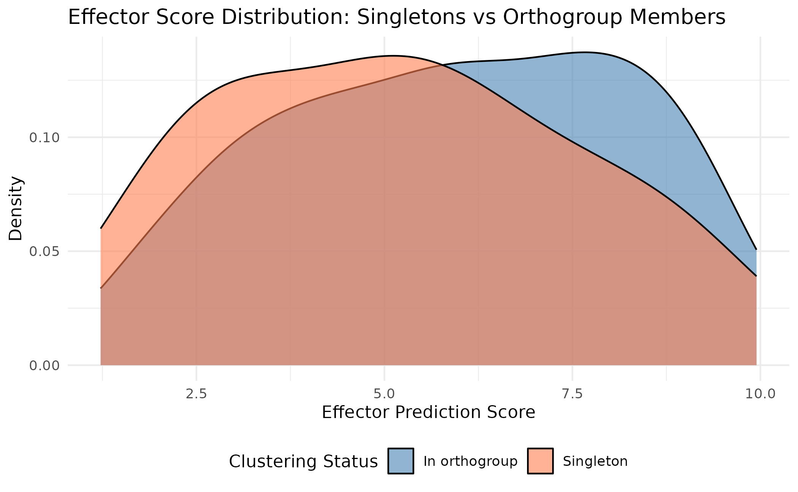
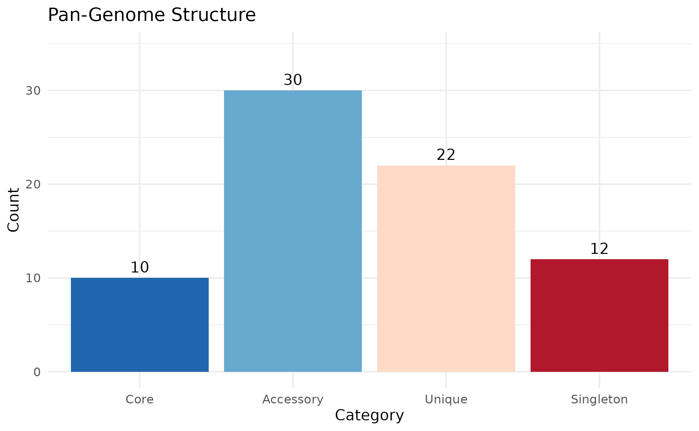
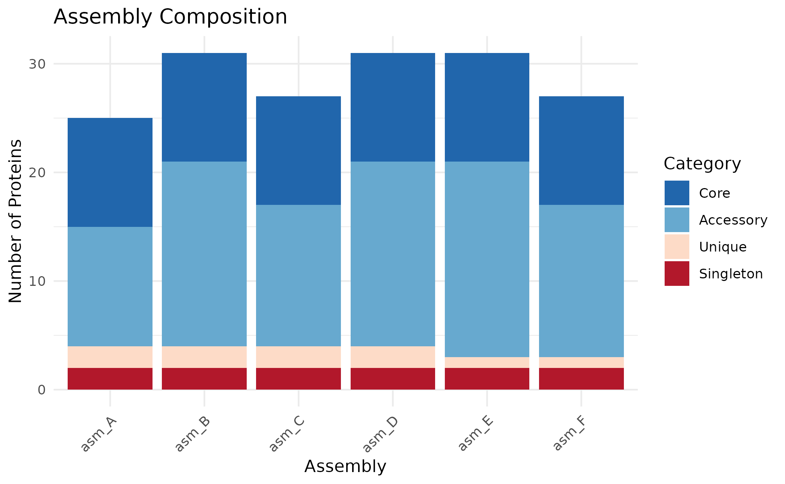
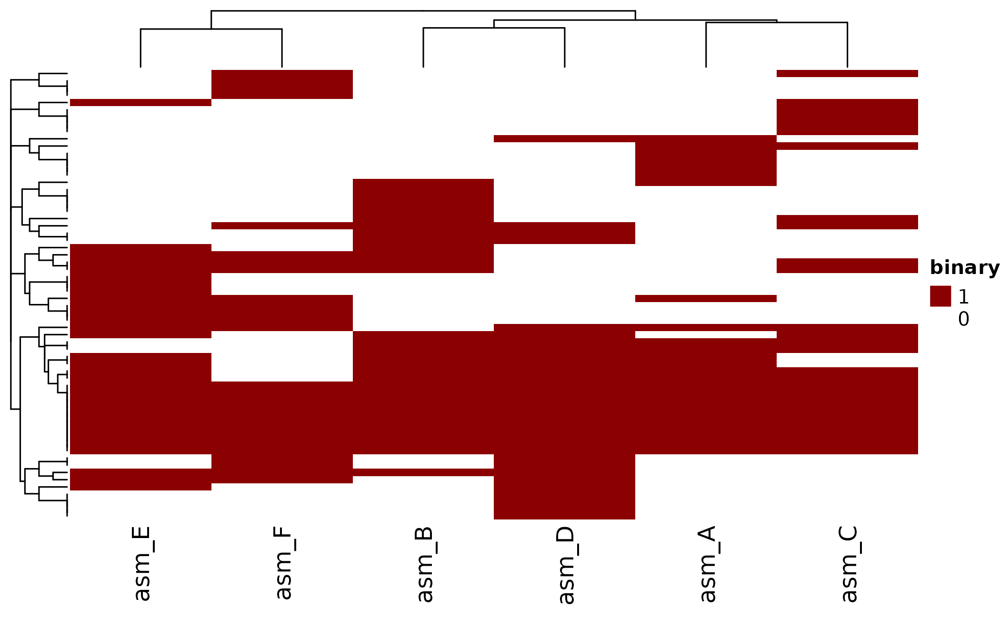
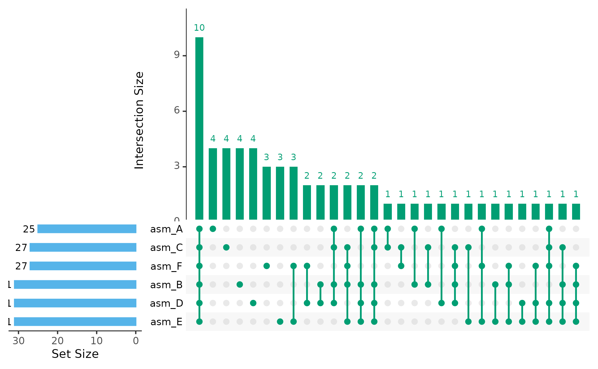
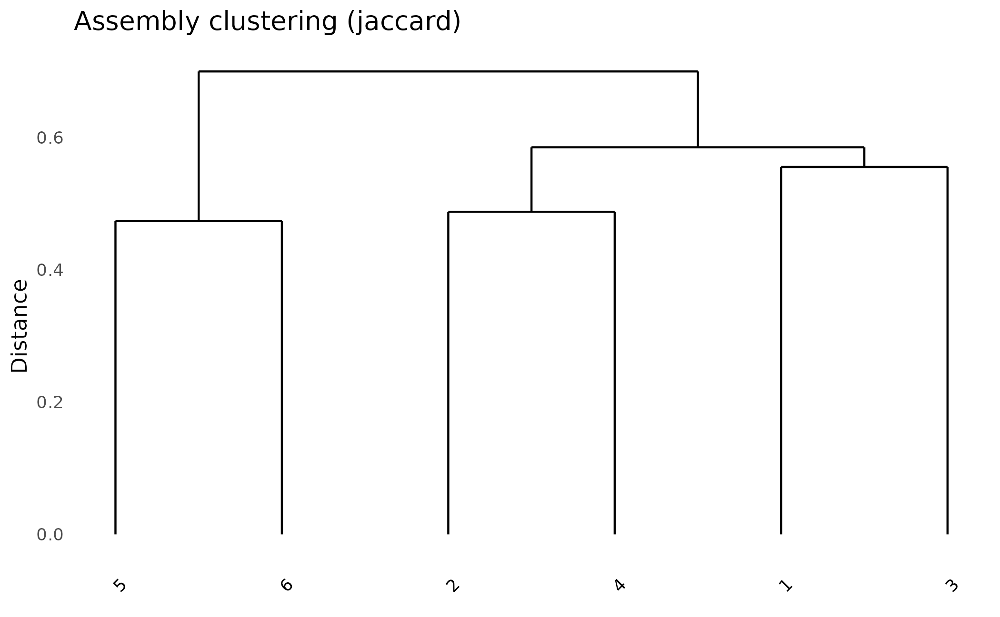

Introduction
This vignette demonstrates how to use paneffectR with output from the omnieff effector prediction pipeline. A key focus is identifying singleton effectors - proteins unique to individual isolates that may drive host specificity or represent recently evolved virulence factors.
Setup and Data Loading
For this vignette, we use pre-computed clustering results with synthetic data that simulates typical effector analysis:
visual_dir <- system.file("testdata", "visual", package = "paneffectR")
clusters <- readRDS(file.path(visual_dir, "clusters_visual.rds"))
proteins <- readRDS(file.path(visual_dir, "proteins_visual.rds"))
clusters
#> -- orthogroup_result (synthetic_visual) --
#> 50 orthogroups
#> 12 singletons
proteins
#> -- protein_collection --
#> 6 assemblies, 172 total proteins
#>
#> # A tibble: 6 × 3
#> assembly_name n_proteins has_scores
#> <chr> <int> <lgl>
#> 1 asm_A 25 TRUE
#> 2 asm_B 31 TRUE
#> 3 asm_C 27 TRUE
#> 4 asm_D 31 TRUE
#> 5 asm_E 31 TRUE
#> 6 asm_F 27 TRUEFinding Unique Effectors: Singletons
When comparing effector repertoires across pathogen isolates, singletons are often the most biologically interesting proteins. These are proteins that couldn’t be clustered with any protein from other assemblies - they appear to be unique to a single isolate.
Singletons are important because they may represent:
- Recently evolved effectors - Novel proteins that emerged in a specific lineage
- Candidate avirulence genes - Effectors recognized by host resistance proteins, driving isolate-specific incompatibility
- Host adaptation factors - Proteins that enable colonization of specific host genotypes
- Candidates for functional characterization - High-priority targets for understanding what makes isolates different
Extracting Singletons
paneffectR provides dedicated functions for working with singletons:
# Get all singletons
singletons <- get_singletons(clusters)
singletons
#> # A tibble: 12 × 2
#> protein_id assembly
#> <chr> <chr>
#> 1 asm_A_singleton_01 asm_A
#> 2 asm_B_singleton_02 asm_B
#> 3 asm_C_singleton_03 asm_C
#> 4 asm_D_singleton_04 asm_D
#> 5 asm_E_singleton_05 asm_E
#> 6 asm_F_singleton_06 asm_F
#> 7 asm_A_singleton_07 asm_A
#> 8 asm_B_singleton_08 asm_B
#> 9 asm_C_singleton_09 asm_C
#> 10 asm_D_singleton_10 asm_D
#> 11 asm_E_singleton_11 asm_E
#> 12 asm_F_singleton_12 asm_F
# Count singletons
n_singletons(clusters)
#> [1] 12
# Summary by assembly
singletons_by_assembly(clusters, proteins)
#> # A tibble: 6 × 4
#> assembly n_singletons n_total pct_singleton
#> <chr> <int> <int> <dbl>
#> 1 asm_A 2 25 8
#> 2 asm_B 2 31 6.45
#> 3 asm_C 2 27 7.41
#> 4 asm_D 2 31 6.45
#> 5 asm_E 2 31 6.45
#> 6 asm_F 2 27 7.41Singleton Scores: Are They Real Effectors?
A key question is whether singletons are genuine effector candidates or just annotation artifacts. We can examine their prediction scores to assess confidence:
# Get all proteins with scores
all_proteins <- do.call(rbind, lapply(names(proteins$assemblies), function(asm) {
proteins$assemblies[[asm]]$proteins %>%
mutate(assembly = asm)
}))
# Join singletons with their scores
singleton_scores <- singletons %>%
left_join(
all_proteins %>% select(protein_id, custom_score),
by = "protein_id"
) %>%
arrange(desc(custom_score))
singleton_scores
#> # A tibble: 12 × 3
#> protein_id assembly custom_score
#> <chr> <chr> <dbl>
#> 1 asm_C_singleton_03 asm_C 8.89
#> 2 asm_B_singleton_02 asm_B 8.76
#> 3 asm_A_singleton_01 asm_A 7.18
#> 4 asm_D_singleton_04 asm_D 6.70
#> 5 asm_F_singleton_06 asm_F 5.71
#> 6 asm_E_singleton_05 asm_E 5.17
#> 7 asm_B_singleton_08 asm_B 4.89
#> 8 asm_A_singleton_07 asm_A 4.81
#> 9 asm_C_singleton_09 asm_C 2.87
#> 10 asm_D_singleton_10 asm_D 2.70
#> 11 asm_F_singleton_12 asm_F 2.64
#> 12 asm_E_singleton_11 asm_E 2.16Several singletons have high effector prediction scores (>6), suggesting they are genuine effector candidates worthy of follow-up, not just noise in the data.
Visualizing Singleton Score Distribution
How do singleton scores compare to proteins in orthogroups?
# Add clustering status to all proteins
clustered_proteins <- clusters$orthogroups %>%
select(protein_id) %>%
mutate(status = "In orthogroup")
singleton_status <- singletons %>%
select(protein_id) %>%
mutate(status = "Singleton")
protein_status <- bind_rows(clustered_proteins, singleton_status)
# Join with scores
score_comparison <- all_proteins %>%
inner_join(protein_status, by = "protein_id")
# Plot comparison
ggplot(score_comparison, aes(x = custom_score, fill = status)) +
geom_density(alpha = 0.6) +
scale_fill_manual(values = c("In orthogroup" = "steelblue", "Singleton" = "coral")) +
labs(
title = "Effector Score Distribution: Singletons vs Orthogroup Members",
x = "Effector Prediction Score",
y = "Density",
fill = "Clustering Status"
) +
theme_minimal() +
theme(legend.position = "bottom")
This shows that singletons span the full range of effector scores - some are high-confidence effector candidates, while others may be lower-priority.
Pan-Effectorome Structure
Beyond singletons, it’s useful to see the overall structure of the effector pan-genome. paneffectR provides functions to visualize how proteins are distributed across assemblies.
Visualizing Pan-Effectorome Structure
plot_pan_structure(clusters)
This shows the composition of the pan-effectorome:
- Core: Present in all assemblies - likely essential for pathogenicity
- Accessory: Present in many but not all assemblies
- Rare: Present in few assemblies (default: ≤10% of assemblies)
- Unique: Orthogroups with members from only 1 assembly
- Singleton: Proteins that couldn’t be clustered at all - truly unique
The thresholds for Rare and Accessory categories are configurable:
# Custom thresholds: Rare if in ≤20% of assemblies, Accessory if ≤50%
plot_pan_structure(clusters, rare_threshold = 0.20, accessory_threshold = 0.50)Per-Assembly Breakdown
How does each assembly contribute to the pan-effectorome?
plot_assembly_composition(clusters)
Use position = "fill" to show proportions instead of
counts:
plot_assembly_composition(clusters, position = "fill")
Working with Effector Scores
Score-Based Filtering
When building matrices, you can filter to high-confidence effectors:
# Build unfiltered matrix first
pa <- build_pa_matrix(clusters, type = "binary")
# Build matrix with score threshold
# Only orthogroups containing proteins with score >= 5 are included
pa_filtered <- build_pa_matrix(
clusters,
type = "binary",
score_threshold = 5.0,
proteins = proteins
)
cat("All orthogroups:", nrow(pa$matrix), "\n")
#> All orthogroups: 62
cat("After score filter (>=5):", nrow(pa_filtered$matrix), "\n")
#> After score filter (>=5): 31Score-Based Matrix
Instead of binary presence/absence, create a matrix with actual scores:
pa_score <- build_pa_matrix(
clusters,
type = "score",
score_column = "custom_score",
proteins = proteins
)
# View scores (0 = absent, otherwise the score value)
pa_score$matrix[1:5, ]
#> asm_A asm_B asm_C asm_D asm_E asm_F
#> OG_acc_01 5.715893 NA NA NA 5.166307 4.349692
#> OG_acc_02 4.573136 4.449630 NA 6.105342 6.137450 NA
#> OG_acc_03 6.999290 5.138241 5.778877 6.306409 5.961777 NA
#> OG_acc_04 5.505549 6.366047 5.559538 5.049768 NA NA
#> OG_acc_05 6.460179 NA 4.726615 6.125112 6.574661 6.382732Visualizing Effector Repertoires
Heatmap
ht <- plot_heatmap(
pa,
cluster_rows = TRUE,
cluster_cols = TRUE,
show_row_names = FALSE,
color = c("white", "darkred")
)
ComplexHeatmap::draw(ht)
UpSet Plot
Which effector combinations are most common?
plot_upset(pa, min_size = 1)
#> Warning: `aes_string()` was deprecated in ggplot2 3.0.0.
#> ℹ Please use tidy evaluation idioms with `aes()`.
#> ℹ See also `vignette("ggplot2-in-packages")` for more information.
#> ℹ The deprecated feature was likely used in the UpSetR package.
#> Please report the issue to the authors.
#> This warning is displayed once per session.
#> Call `lifecycle::last_lifecycle_warnings()` to see where this warning was
#> generated.
#> Warning: Using `size` aesthetic for lines was deprecated in ggplot2 3.4.0.
#> ℹ Please use `linewidth` instead.
#> ℹ The deprecated feature was likely used in the UpSetR package.
#> Please report the issue to the authors.
#> This warning is displayed once per session.
#> Call `lifecycle::last_lifecycle_warnings()` to see where this warning was
#> generated.
#> Warning: The `size` argument of `element_line()` is deprecated as of ggplot2 3.4.0.
#> ℹ Please use the `linewidth` argument instead.
#> ℹ The deprecated feature was likely used in the UpSetR package.
#> Please report the issue to the authors.
#> This warning is displayed once per session.
#> Call `lifecycle::last_lifecycle_warnings()` to see where this warning was
#> generated.
Assembly Dendrogram
How similar are effector repertoires between assemblies?
plot_dendro(pa, distance_method = "jaccard")
Exporting Results
Export Matrices
# Export presence/absence matrix
write.csv(as.data.frame(pa), "effector_presence_absence.csv")
# Export orthogroup membership
write.csv(clusters$orthogroups, "orthogroup_membership.csv", row_names = FALSE)Export Singletons
# All singletons with scores
write.csv(singleton_scores, "all_singletons_with_scores.csv", row.names = FALSE)
# Summary by assembly
write.csv(
singletons_by_assembly(clusters, proteins),
"singletons_summary.csv",
row.names = FALSE
)Summary
Key steps for effector analysis with paneffectR:
-
Load data with
load_proteins(fasta_dir, score_dir) -
Cluster with
cluster_proteins()(requires DIAMOND) -
Examine singletons first - use
get_singletons()and check their scores -
Build matrices with
build_pa_matrix(), optionally filtering by score -
Visualize with
plot_heatmap(),plot_upset(),plot_dendro() - Export singletons and orthogroup membership for follow-up
Next Steps
- Getting Started - Basic workflow overview
- Pan-Genome Analysis - Analysis without scores
- Algorithm Deep Dive - Technical details on clustering